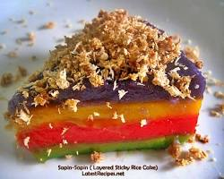

INGREDIENTS
- 1 ⅓ cups Glutinous rice flour
- ¾ cup Granulated sugar
- 1 cup Coconut milk
- 1 can (300ml) Condensed milk
- ½ teaspoon Pandan extract (optional)
- Pinch of Salt
- Ube halaya (purple yam jam) - about 1/2 cup
- Pandan extract or pandan leaves - for green layer
- Langka (jackfruit) halaya or canned jackfruit in syrup - about 1/2 cup
- Food coloring (violet for ube, yellow for jackfruit, can omit for white layer)
- Latik (coconut caramel) - optional
- Grated coconut - toasted
|

|
PROCEDURE
- Prepare the batter: In a large bowl, whisk together glutinous rice flour, sugar, salt, and pandan extract (if using).
- Gradually add coconut milk and condensed milk, whisking until smooth and free of lumps.
- Divide the batter: Separate the batter equally into three bowls.
- Color and flavor the layers in the first bowl, add ube halaya and a few drops of violet food coloring, mix well. In the second bowl, add pandan extract or a few pandan leaves, and yellow food coloring (optional), mix well.
- Leave the third bowl plain (white layer).
- Steaming: Prepare a steamer with enough water. Grease a baking pan or individual molds with oil.
- Pouring layers: Pour a thin layer of ube batter (purple) into the greased pan, steam for about 10 minutes or until set. You can test by inserting a toothpick, it should come out clean.
- Carefully pour a layer of green pandan batter on top of the ube layer, steam for another 10 minutes.
- Repeat step 7 with the white or langka batter (yellow).
- Continue steaming until all layers are cooked through and a toothpick inserted comes out clean. This will take approximately 30-40 minutes in total.
- Cooling and topping: Let the sapin-sapin cool completely before slicing. Drizzle with latik (optional) and sprinkle with toasted grated coconut.
- Serve and enjoy!
|
Sapin-sapin is a layered glutinous rice and coconut dessert in Philippine cuisine. It is made from rice flour, coconut milk, sugar, water, flavoring and coloring. It is usually sprinkled with latik or toasted desiccated coconut flakes.
The dessert is recognizable for its layers, each colored separately.
|